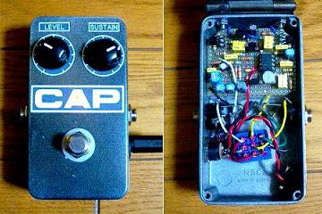
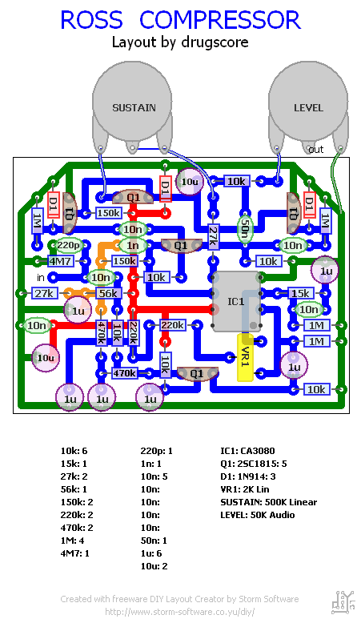

Ross Compressor
2007年12月01日 カテゴリー：自作エフェクター（アナログ）

TONEPADにあるRoss Compressorです。トランジスタは2SC1815-GRです。
▽回路図
TONEPAD Ross Compressor プロジェクトファイル ダウンロードページ
▽レイアウト

Fuzz Centralを参考にいろいろ変更してます（レイアウトはトランジスタ以外TONEPADの定数のままです）。
入力の4.7MΩ→1MΩ
入力の220pF→なし
出力の50nF→1μF
ダイオード→1S2076A
+9Vの10μF→100μF
BIASの1μF→47μF
SUSTAINポット500kB→500kC
LEVELポット50kA→100kB
最初変化がわからず失敗したかと思いました。つまり変化がわからないくらいナチュラルにかかっているということですね。ノイズも問題ないようです。作った達成感は今ひとつかもしれませんが、原音に忠実なのでどんなときでも使えそうです。でもピッキングが下手になりそうなので練習のときは使わないことにします。
見てわかるとおりケースはJAMの流用です。このケースを使いたいがために勢いで作成してしまいました…